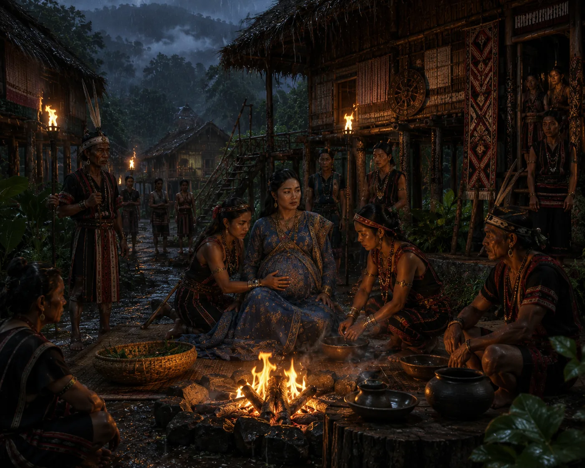

Supimphaa Exiles Pregnant Queen to the Nagas
c. 1494 · The coming of Sukaphaa

Due to malicious palace gossip, Supimphaa banishes his pregnant queen to the village of a loyal Naga chief.
Sources have not yet been catalogued for this record.
People: Supimphaa